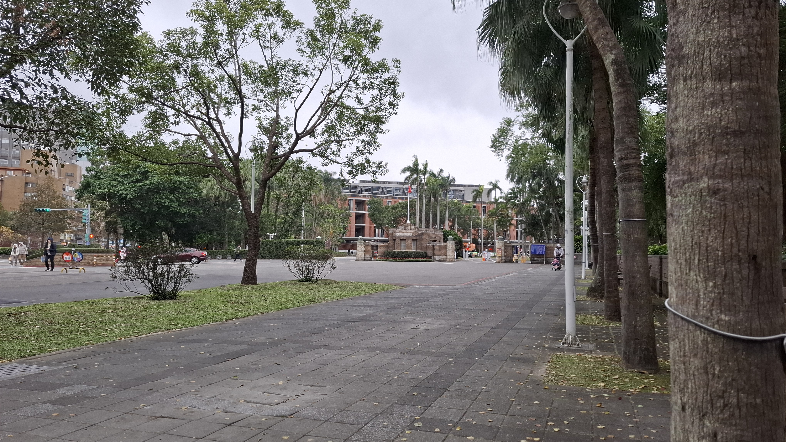
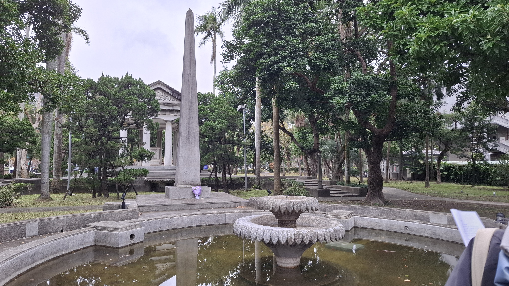
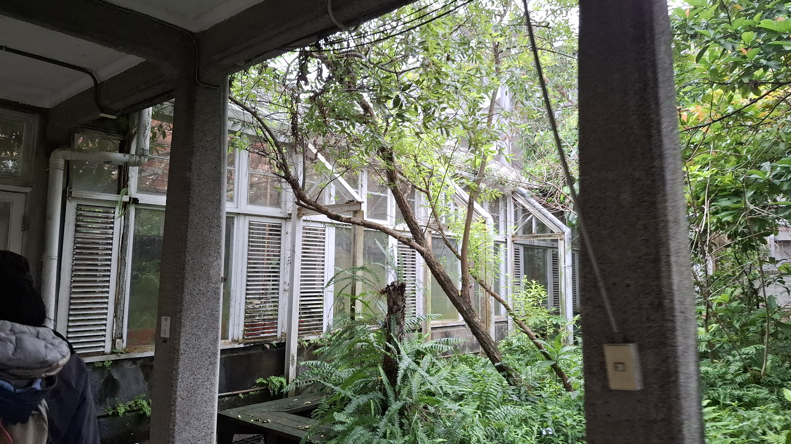
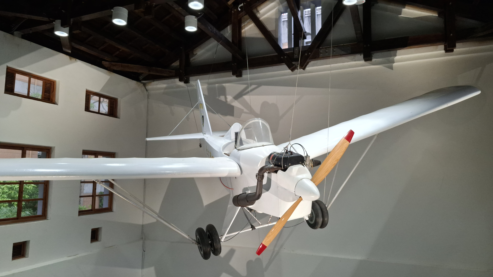

唯一
在戰時工學部的規劃裡，機械館是唯一完成、並延續至今的建築。它讓「未完成」成為可以被走進去的歷史。
一場從校門口出發的建築走讀。把臺大的校園當成國家治理、知識生產與工藝變遷的縮影，最後走進一棟在戰火中完成、如今成為工學博物館的機械館。
這條路線沒有急著從一棟房子的風格講起，而是先問：一所大學怎麼被建出來，又怎麼在不同政權與時代裡換了用途？從臺北帝國大學的校園配置，到戰前、戰後陸續留下的建築，走讀把分散在椰林大道兩側的房子串成一段可步行閱讀的歷史。
每一次轉身，都從宏觀的校園制度，收束到一個可以用眼睛和腳步確認的細節。
從椰林大道的方向與尺度，回看臺北帝大時期的營建體制。
水池、方尖碑與七種洗石子，讓戰後有限資源留下可辨識的手工痕跡。
1929 年的紅磚建築與 1962 年的增建，在拱窗與樓梯之間交會。
走進 1943 年共同教室北棟，辨認伏壁、排氣櫃、挑高空間與木屋架。
導覽先把視線拉遠：臺北帝國大學的校園由總督府營繕體系推動，建築沿著軸線排布，形成一種可以被走出來的秩序。今日站在路上，仍能感覺到校園如何把知識、行政與國家想像安置在同一個空間裡。

傅斯年紀念園區把戰後的材料與工藝放在可近距離觀看的位置。方尖碑、水池與仿希臘神殿的比例，並不是單純的樣式模仿。洗石子與磨石子的顆粒、顏色和分割，讓工匠技藝成為空間的一部分。

1929 年的動物、植物標本館與實驗室，原本服務臺北帝大早期的生物學研究。走到建築背面，拱窗單元與樓梯的位置，讓日本時代的原貌和戰後的擴建不再混成一體。1962 年的增建工程留下建築師楊卓成的線索，也把美援科教計畫如何進入校園，放進一棟房子的剖面裡。
這段後巷平常很容易錯過。只有跟著路線繞到背面，才能同時看見兩個時期的尺度差。

工學部原本有更大的校園規劃，最後在戰爭中完成的，是 1943 年的機械館，也就是今天的工學博物館。它曾經是工學院新館，後來交由機械系使用，隨著新館舍陸續出現，功能一再轉換。建築因此保留下不同時期的使用痕跡。
館內最值得停留的是結構本身：長向承重磚牆、為大空間加強的伏壁、從研究室排出氣體的排氣櫃，以及二樓挑高的木屋架。外側懸空樓梯的來歷仍待考證，但它作為緊急逃生動線的功能可以被確認。這些尚未解開的地方，讓建築仍在繼續說話。

這次看見的，不只是一串老建築名稱，而是建築如何在制度、材料與使用者之間持續變形。
在戰時工學部的規劃裡，機械館是唯一完成、並延續至今的建築。它讓「未完成」成為可以被走進去的歷史。
雨傘下的講解、被打開的後巷、短暫可見的屋架與排氣櫃，都是只有在這個午後、沿著這條路線才會連成一體的觀看經驗。
修復後的新立面要不要仿舊，材料該不該留下當代的痕跡，沒有單一答案。保存也因此不只是把房子留住，而是留下今天如何介入的證據。
下次經過臺大校園，可以試著從建築背面走一小段。先看拱窗，再找伏壁，最後抬頭確認屋架，校園會從景色變成一張可讀的圖。